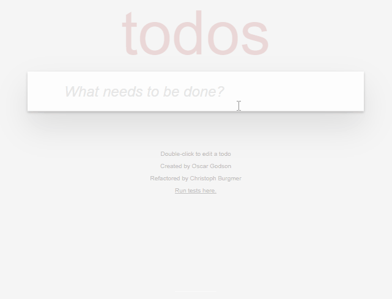
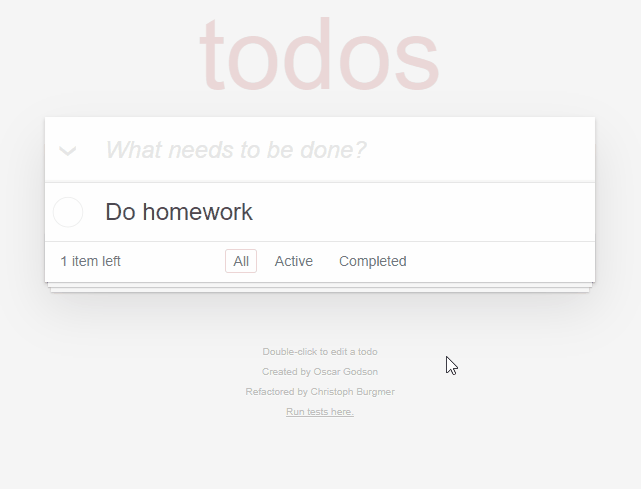
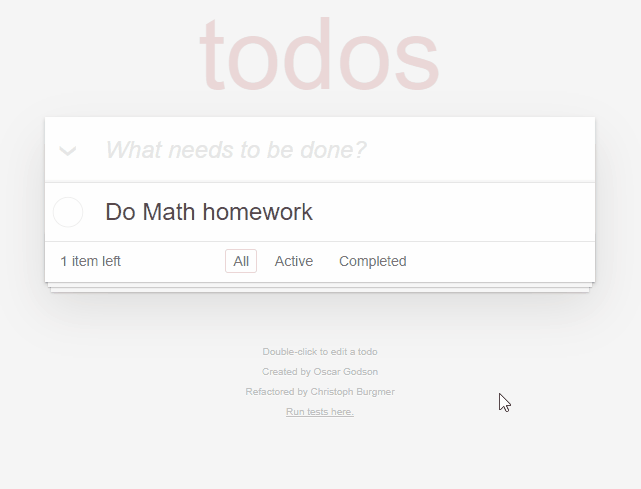
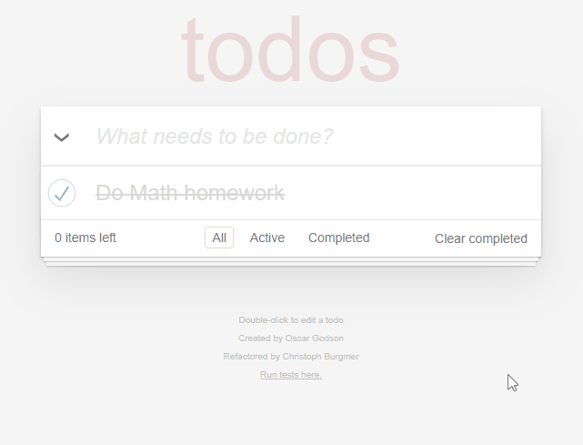
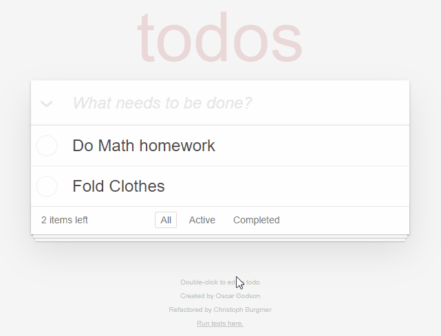
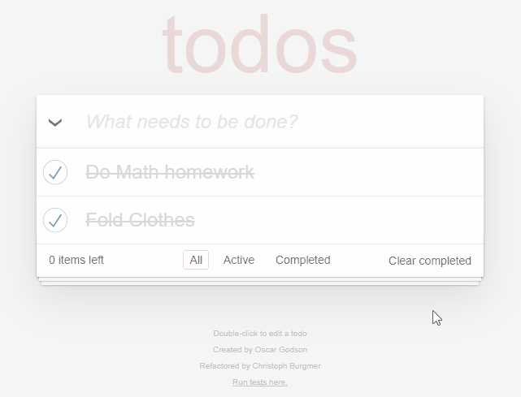
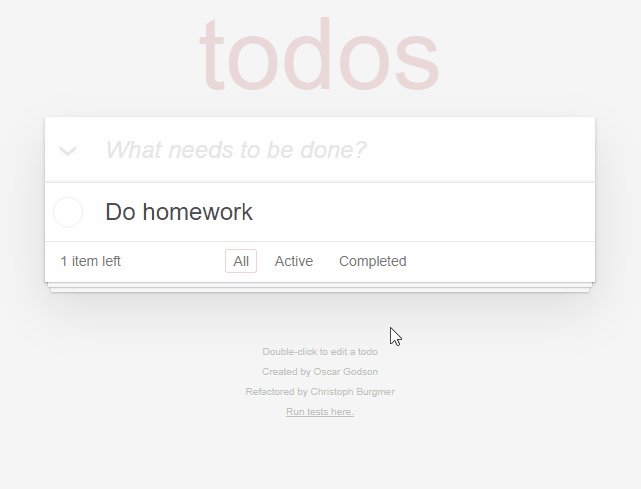

Getting Started
These instructions will get you a copy of the project up and running on your local machine for development and testing purposes.
Prerequisites
You will need both Node.js and Git to be installed on your machines before continuing.
Installation
To install the project, go to the desired folder and open the command line/terminal. Type the command;
git clone https://github.com/samsam-026/openclassrooms-todo-app.git
Once cloned into the machine, go into the newly created folder openclassrooms-todo-app and open the index.html file to use the project.
Testing
To test the repo, first clone it as seen above, then move into the folder from the terminal;
cd openclassrooms-todo-app
Then install the testing dependencies using this command;
npm install
Upon successful installation, the tests can be run when the test/SpecRunner.html file is opened.
MVC Architecture
The architecture used in this project is MVC (Model-View-Controller) that separates an application into 3 main parts. Its is the most commonly used architecture for websites.
Model
The model is the data related logic of the application.
In this application, the data objects are the todo objects and the list of todos.
Below are the methods implemented for the model;
create
Creates a new todo.
read
Return a list of todo according to the chosen filter (All/Active/Completed).
update
Update the details of a todo item (todo name/completed or not).
remove
Remove a specific todo using its unique ID.
removeAll
Delete all todos.
getCount
Get the number of todos according to chosen filter (All/Active/Completed).
View
The view contains the UI of the application, which is what the is displayed to the user.
In the case of this application, it is the index.html page.
Below are the methods implemented for the view;
showEntries
Display all todos as a list on the webpage.
removeItem
Remove list item li with the corresponding data-id attribute.
updateElementCount
Update the counter that shows the number of active todo items on the webpage.
clearCompletedButton
Display the "Clear completed" button if there are completed todos.
contentBlockVisibility
Display the footer which contains all buttons and filters if there is more than one todo.
toggleAll
Display a more opaque icon on the "toggle all" button next to the text input, when clicked.
setFilter
Set the selected class on the selected filter (All/Active/Completed).
clearNewTodo
Clear the value in the text input once a new todo is created.
elementCompleted
Toggle the class completed on the todo list item to change its opacity. Additionally, toggle the checkmark of the checkbox input of the todo list item.
editItem
Display a text input on the todo list item li when the item is double-clicked.
editItemDone
Hide the text input once the todo item has been edited and replace the old todo name with the newly entered one.
Controller
The controller of an application acts as an interface between the model and the view.
It handles the requests made from the user in the view and manipulates the model accordingly.
Below are the methods implemented for the controller;
addItem
Triggered by the typing the enter key in the text input.
It calls the model method create to create a new todo.
Once the todo is created, the view methods showEntries, setFilter and updateElementCount are run.
editItem
Triggered when a todo pst item is clicked.
It calls the model method read to find the current todo list item name.
The view method editItem is run.
editItemSave
Triggered when the enter key is typed in a text input in a todo list item.
It calls the model method update to replace the new name of the todo.
If an empty string is passed, the model method remove is called instead.
Once the value is updated, the view methods editItemDone, updateElementCount and clearCompletedButton is run.
editItemCancel
Triggered by clicking outside the text input in a todo list item after it is displayed.
It calls the model method read to find the current todo list item name.
The view method editItemDone is run.
removeItem
Triggered by clicking the cross icon on the right of a todo list item.
It calls the model method remove on the clicked todo to delete it from the list.
Once it is deleted, the view methods updateElementCount and removeItem are run
toggleComplete
Triggered by clicking the checkbox on the left of a todo list item.
It calls the model method update on the clicked todo to make it completed.
Once the todo is updated, the view methods updateElementCount, clearCompletedButton and elementCompleted are run.
removeCompletedItems
Triggered by clicking the "Clear completed" button.
It calls the model method remove on all todos which are completed.
Once the value is updated, the view method removeItem is run for each completed todo.
toggleAll
Triggered when clicking the "toggle all" checkbox next to the text input.
It calls the model method update on each todo to have the same completed state.
Once the value is updated, the view methods toggleAll, clearCompletedButton and elementCompleted are run.
Todo Application Flow
The complete flow of the application is illustrated below;
Usage
Creating a todo

- Click on the text input.
- Type in the todo name.
- Press the enter key to save the todo.
View methods
Controller methods
Updating a todo

- Double-click the todo list item.
- Type in your new todo name.
- Press the enter key to save the todo, OR
- Click outside the input to cancel the change.
View methods
editItem, editItemDone, updateElementCount, clearCompletedButton
Controller methods
Completing a todo
Click on the checkbox on the left of the list item.
View methods
Controller methods
Removing a todo
Click on the cross icon on the right of the list item.
View methods
Controller methods
Complete all todos
Click on the checkbox on the left of the text input to toggle all todos complete/active.
View methods
toggleAll, clearCompletedButton, elementCompleted, updateElementCount
Controller methods
Clear Completed todos
Click on the "Clear completed" button on the right of the footer to delete all completed todos.
View methods
removeItem, clearCompletedButton, contentBlockVisibility, updateElementCount
Controller methods
Filtering the todo list

- All: The first view displaying all todos.
- Active: The second view displaying all non-completed (active) todos only.
- Completed: The third view displaying all completed todos only.
View methods
Controller methods
N/A